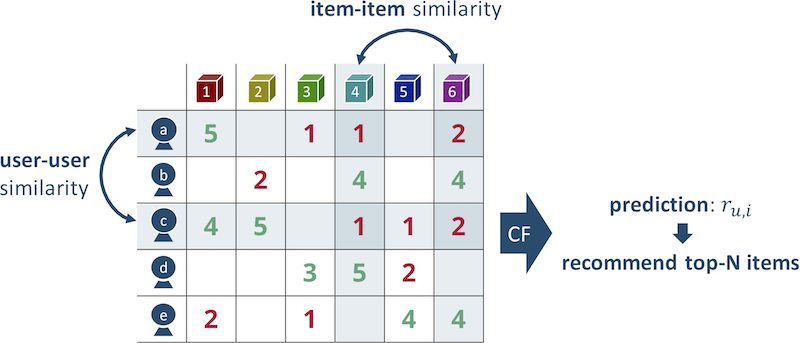

Collaborative Filtering
Since datasets on conventional recommender systems are commonly represented as a user-item matrix $R \in \mathbb{R}^{|\mathcal{U}| \times |\mathcal{I}|}$, this page specially focuses on the matrix completion techniques for recommendation. A key idea of matrix-completion-based recommendation is to predict missing values in $R$ and figure out the most promising items to a target user as follows:

To give an example, for a user $a$, item $2$ and $4$ are unobserved. In this case, what a recommender does is to predict the missing elements and decides which item is more likely to be preferred by the user.
In particular, collaborative filtering (CF) is one of the most popular matrix-completion-based recommenders which was originally introduced by Goldberg et al. in 1992. The goal of CF algorithm is to suggest new items for a particular user by modeling user-user and item-item similarities. From a users' perspective, CF assumes that users who behaved similarly on a service share common tastes for items. On the other hand, items which resemble each other are likely to be preferred by the same users.
$k$-Nearest Neighbor
A $k$-nearest neighbor ($k$-NN) approach, one of the simplest CF algorithms, runs in two-fold. First, missing values in $R$ is predicted based on the past observations. Here, a $(u, i)$ element between a target user $u$ and item $i$ is estimated by explicitly computing the similarities of users (items). Second, a recommender chooses top-$k$ items from the results of the prediction step.
Importantly, $k$-NN can be classified into a user-based and item-based algorithm. In a user-based algorithm, user-user similarities are computed for every pairs of rows in $R$. By contrast, item-based CF stands on column-wise similarities between items. Following figure illustrates how $k$-NN works on a user-item matrix $R$:

Note that the figure is inspired by a paper written by Sarwar et al.
The elements are ratings in a $[1, 5]$ range for each user-item pair, so $1$ and $2$ mean relatively negative feedback and vice versa. In the figure, user $a$ and $c$ seem to have similar tastes because both of them gave nearly identical feedback to item $1$, $4$ and $6$. From an item-item perspective, item $4$ and $6$ are similarly rated by user $a$, $b$ and $c$.
In order to measure the similarities between rows (columns), the Pearson correlation and cosine similarity are widely used. For $d$-dimensional vectors $\mathbf{x}, \mathbf{y} \in \mathbb{R}^d$, the Pearson correlation $\mathrm{corr}(\mathbf{x}, \mathbf{y})$ and cosine similarity $\mathrm{cos}(\mathbf{x}, \mathbf{y})$ are respectively defined as:
\[\mathrm{corr}(\mathbf{x}, \mathbf{y}) = \frac{\sum_i (x_{i} - \overline{x})(y_{i} - \overline{y})}{\sqrt{\sum_i (x_{i} - \overline{x})^2} \sqrt{\sum_i (y_{i} - \overline{y})^2}},\]
\[\mathrm{cos}(\mathbf{x}, \mathbf{y}) = \frac{\mathbf{x} \cdot \mathbf{y}}{\| \mathbf{x} \| \| \mathbf{y} \|} = \frac{\sum_i x_{i} y_{i}}{\sqrt{\sum_i x_{i}^2} \sqrt{\sum_i y_{i}^2}},\]
where $\overline{x} = \frac{1}{d} \sum^d_{i=1} x_i$ and $\overline{y} = \frac{1}{d} \sum^d_{i=1} y_i$ denote mean values of the elements in a vector. Additionally, in a context of data mining, elements in $\mathbf{x}$ and $\mathbf{y}$ can be distributed on a different scale, so mean-centering of the vectors usually leads better results as shown by Sarwar et al. Notice that cosine similarity between the mean-centered vectors, $\hat{\mathbf{x}} = (x_1 - \overline{x}, x_2 - \overline{x}, \dots, x_n - \overline{x})$ and $\hat{\mathbf{y}} = (y_1 - \overline{y}, y_2 - \overline{y}, \dots, y_n - \overline{y})$, is mathematically equivalent to the Pearson correlation $\mathrm{corr}(\mathbf{x}, \mathbf{y})$ as follows:
\[\mathrm{cos}(\hat{\mathbf{x}}, \hat{\mathbf{y}}) = \frac{\sum_i (x_{i} - \overline{x})(y_{i} - \overline{y})}{\sqrt{\sum_i (x_{i} - \overline{x})^2} \sqrt{\sum_i (y_{i} - \overline{y})^2}} = \mathrm{corr}(\mathbf{x}, \mathbf{y}).\]
Recommendation.UserKNN — TypeUserKNN(
data::DataAccessor,
k::Int,
normalize::Bool=false
)User-based CF using the Pearson correlation. k represents number of neighbors, and normalize specifies if weighted sum of neighbors' rating is normalized.
The technique gives a weight to a user-user pair by the following equation:
\[s_{u, v} = \frac{ \sum_{i \in \mathcal{I}^+_{u \cap v}} (r_{u, i} - \overline{r}_u) (r_{v, i} - \overline{r}_v)} { \sqrt{\sum_{i \in \mathcal{I}^+_{u \cap v}} (r_{u,i} - \overline{r}_u)^2} \sqrt{\sum_{i \in \mathcal{I}^+_{u \cap v}} (r_{v, i} - \overline{r}_v)^2} },\]
where $\mathcal{I}^+_{u \cap v}$ is a set of items which were observed by both user $u$ and $v$, and $r_{u, i}$ indicates a $(u, i)$ element in $R$. Plus, $\overline{r}_u$ and $\overline{r}_v$ are respectively mean values of $r_{u, i}$ and $r_{v, i}$ over $i \in \mathcal{I}^+_{u \cap v}$. By using the weights, user-based CF selects the top-$k$ highest-weighted users (i.e., nearest neighbors) of a target user $u$, and predicts missing $r_{u, i}$ for $i \in \mathcal{I}^-_u$ as:
\[r_{u, i} = \overline{r}_u + \frac{\sum^k_{t=1} \left(r_{\sigma(t), i} - \overline{r}_{\sigma(t)}\right) \cdot s_{u,\sigma(t)} }{ \sum^k_{t=1} s_{u,\sigma(t)} },\]
where $\sigma(t)$ denotes the $t$-th nearest-neighborhood user. Ultimately, sorting items $\mathcal{I}^-_u$ by the predicted values enables us to make recommendation to a user $u$.
It should be noted that user-based CF is highly inefficient because gradually increasing massive users and their dynamic tastes require us to frequently recompute the similarities for every pairs of users.
Recommendation.ItemKNN — TypeItemKNN(
data::DataAccessor,
k::Int
)Item-based CF that provides a way to model item-item concepts by utilizing the similarities of items in the CF paradigm. k represents number of neighbors.
Item properties are relatively stable compared to the users' tastes, and the number of items is generally smaller than the number of users. Hence, while user-based CF successfully captures the similarities of users' complex tastes, modeling item-item concepts could be much more promising in terms of both scalability and overall accuracy.
Item-based CF defines a similarity between an item $i$ and $j$ as:
\[s_{i,j} = \frac{ \sum_{u \in \mathcal{U}_{i \cap j}} (r_{u, i} - \overline{r}_i) (r_{u, j} - \overline{r}_j)} { \sqrt{\sum_{u \in \mathcal{U}_{i \cap j}} (r_{u,i} - \overline{r}_i)^2} \sqrt{\sum_{u \in \mathcal{U}_{i \cap j}} (r_{u, j} - \overline{r}_j)^2} },\]
where $\mathcal{U}_{i \cap j}$ is a set of users that both of $r_{u,i}$ and $r_{u, j}$ are not missing, and $\overline{r}_i, \overline{r}_j$ are mean values of $i$-th and $j$-th column in $R$. Similarly to the user-based algorithm, for the $t$-th nearest-neighborhood item $\tau(t)$, prediction can be done by top-$k$ weighted sum of target user's feedbacks:
\[r_{u,i} = \frac{\sum^k_{t=1} s_{i,\tau(t)} \cdot r_{u,\tau(t)} }{ \sum^k_{t=1} s_{i,\tau(t)} }.\]
In case that the number of items is smaller than users, item-based CF could be a more reasonable choice than the user-based approach.
Singular Value Decomposition
Along with the development of the $k$-NN techniques, researchers noticed that handling the original huge user-item matrices is computationally expensive. Moreover, $k$-NN-based recommendation leads overfitting to individual taste due to the sparsity of $R$. Thus, dimensionality reduction techniques were applied to recommendation in order to capture more abstract preferences.
Singular value decomposition (SVD) is one of the most popular dimensionality reduction techniques which decomposes an $m$-by-$n$ matrix $A$ to $U \in \mathbb{R}^{m \times m}$, $\Sigma \in \mathbb{R}^{m \times n}$ and $V \in \mathbb{R}^{n \times n}$:
\[\mathrm{SVD}(A) = U \Sigma V^{\mathrm{T}} = \left[\mathbf{u}_1, \mathbf{u}_2, \cdots, \mathbf{u}_m\right] \mathrm{diag}\left(\sigma_1, \sigma_2, \dots, \sigma_{\min(m, n)}\right) \left[\mathbf{v}_1, \mathbf{v}_2, \cdots, \mathbf{v}_n\right]^{\mathrm{T}},\]
by letting $\sigma_1 \geq \sigma_2 \geq \cdots \geq \sigma_{\min(m, n)} \geq 0$. An orthogonal matrix $U$ ($V$) is called left (right) singular vectors which represents characteristics of columns (rows) in $R$, and a diagonal matrix $\Sigma$ holds singular values on the diagonal elements as weights of each singular vector.
The reason why SVD can be applied to dimensionality reduction is that the most lower singular values of real-world matrices are very close to zero. Hence, using only top-$k$ singular values $\Sigma_k \in \mathbb{R}^{k \times k}$ and corresponding singular vectors $U_k \in \mathbb{R}^{m \times k}$, $V_k \in \mathbb{R}^{n \times k}$ is sufficient to make reasonable rank-$k$ approximation of a matrix $A$. The following figure demonstrates how SVD decomposes a matrix into rank-$k$ matrices.

On top of that, $\mathrm{SVD}_k(A)$ is known as the best rank-$k$ approximation of the matrix $A$ in both the spectral and Frobenius norm. Note that the spectral norm of a matrix equals to its largest singular value.
Recommendation.SVD — TypeSVD(
data::DataAccessor,
k::Int
)Recommendation based on SVD of a user-item matrix $R \in \mathbb{R}^{|\mathcal{U}| \times |\mathcal{I}|}$, which was originally studied by Sarwar et al. Rank $k$ is configured by k.
In a context of recommendation, $U_k \in \mathbb{R}^{|\mathcal{U}| \times k}$, $V \in \mathbb{R}^{|\mathcal{I}| \times k}$ and $\Sigma \in \mathbb{R}^{k \times k}$ are respectively seen as $k$ user/item feature vectors and corresponding weights. The idea of low-rank approximation that discards lower singular values intuitively works as compression or denoising of the original matrix; that is, each element in a rank-$k$ matrix $A_k$ holds the best compressed (or denoised) value of the original element in $A$. Thus, $R_k = \mathrm{SVD}_k(R)$, the best rank-$k$ approximation of $R$, captures as much as possible of underlying users' preferences. Once $R$ is decomposed into $U, \Sigma$ and $V$, a $(u, i)$ element of $R_k$ calculated by $\sum^k_{j=1} \sigma_j u_{u, j} v_{i, j}$ could be a prediction for the user-item pair.
SVD actually works well on user-item matrices, but the method poses some difficulties in practice. First, finding optimal $k$ is not straightforward. Even though $R_k$ is the best rank-$k$ approximation of $R$, too small $k$ obviously loses too much information of the original matrix, and it decreases the accuracy of recommendation. At the same time, too large $k$ prevents taking advantage of dimensionality reduction. Hence, carefully choosing $k$ by evaluation on a local environment is practically important.
Furthermore, the following points require us to take an extra effort to make SVD feasible for recommendation:
- We need to preliminarily fill missing values in $R$ to launch SVD, and there are several options such as mean imputation and zero filling.
- Although the original matrix $R$ is a huge matrix in both rows and columns, SVD is a computationally expensive operation.
- Explaining how the recommendation was generated is practically important, but it is hard for SVD-based recommendation unless mathematical background is explained.
Matrix Factorization
Even though dimensionality reduction is a promising approach to make effective recommendation, SVD is not feasible enough in terms of running time and missing value imputation. As a result, a new technique generally called matrix factorization (MF) was introduced by Koren et al.
The initial MF technique was invented by Funk during the Netflix Prize, and the method is called regularized SVD because it can be seen as an extension of the conventional SVD-based recommendation. Regularized SVD and the other MF techniques achieved efficient approximation of the original SVD based on gradient descent optimization, and we do not need to care about missing values in $R$ any more. The basic idea of MF is to factorize a user-item matrix $R$ to a user factored matrix $P \in \mathbb{R}^{|\mathcal{U}| \times k}$ and item factored matrix $Q \in \mathbb{R}^{|\mathcal{I}| \times k}$ as shown below. Eventually, $R$ is approximated by $PQ^{\mathrm{T}}$. Unlike SVD, singular values in $\Sigma$ are embedded to the factored matrices, and orthogonality is lost. Thus, taking advantage of mathematically tractable properties of SVD is unfortunately impossible for MF.

Recommendation.MatrixFactorization — TypeMatrixFactorization(
data::DataAccessor,
k::Int
)Recommendation based on matrix factorization (MF). Number of factors is configured by k.
MF solves the following minimization problem for a set of observed user-item interactions $\mathcal{S} = \{(u, i) \in \mathcal{U} \times \mathcal{I}\}$:
\[\min_{P, Q} \sum_{(u, i) \in \mathcal{S}} \left( r_{u,i} - \mathbf{p}_u^{\mathrm{T}} \mathbf{q}_i \right)^2 + \lambda \ (\|\mathbf{p}_u\|^2 + \|\mathbf{q}_i\|^2),\]
where $\mathbf{p}_u, \mathbf{q}_i \in \mathbb{R}^k$ are respectively a factorized user and item vector, and $\lambda$ is a regularization parameter to avoid overfitting. An optimal solution will be found by stochastic gradient descent (SGD). Ultimately, we can predict missing values in $R$ by just computing $PQ^{\mathrm{T}}$, and the prediction directly leads recommendation.
Recommendation.MF — TypeMF(
data::DataAccessor,
k::Int
)Alias of MatrixFactorization.
MF is attractive in terms of not only efficiency but extensibility. In the above formulation, prediction for each user-item pair can be written by a simple vector product as $r_{u,i} = \mathbf{p}_u^{\mathrm{T}} \mathbf{q}_i$, and extension of the formula is also possible. That is, we can incorporate different features (e.g., biases and temporal factors) into the model as linear combinations. For example, let $\mu$ be a global mean of all elements in $R$, and $b_u, b_i$ be respectively a user and item bias term. Here, we assume that each observation can be represented as $r_{u,i} = \mu + b_u + b_i + \mathbf{p}_u^{\mathrm{T}} \mathbf{q}_i$. This formulation is known as biased MF, and it is possible to capture more information than the original MF even on the same set of events $\mathcal{S}$.
Additionally, options for loss functions are also abundant. To give an example, Chen et al. showed various types of features and loss functions which can be incorporated into a MF scheme. An appropriate choice of their combinations is likely to lead surprisingly better accuracy compared to the classical MF.
It should be noted that the technique has many limitations behind great success of MF-based recommendation. Since extension of MF only allows us to append new features as linear combinations, representing more complex relationships between features is not straightforward. As a consequence, modern recommenders tend to use more complex models which are higher dimensional and hard to optimize such as tensor factorization.